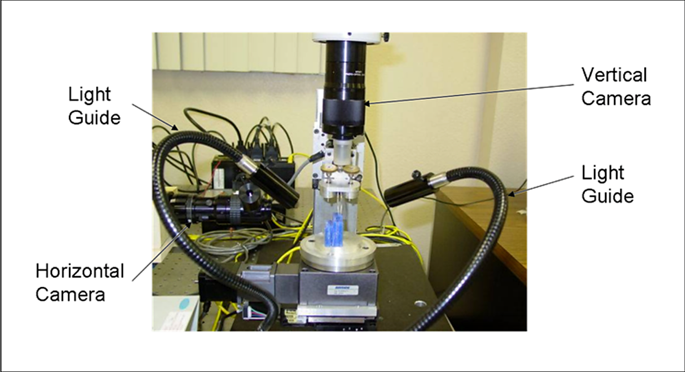
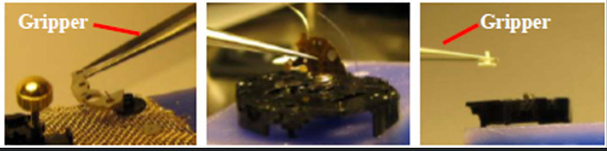

Cross-Section of our Capabilities and Expertise
Our team is composed of engineering trailblazers, experienced software engineers, thought leaders and pioneers in information centric methods, tools and frameworks. This includes leaders in designing and building:
- 3D Digital Twins and simulators for robotics, manufacturing, medicine and Moon Mission
- IoT-based cyber-physical frameworks for manufacturing (Industry 4.0 contexts) and healthcare
- Human-centric simulators which enhance user friendliness and reduce cognitive load
- Cognitive and Smart Manufacturing frameworks
- AI-based monitoring and analytics
- Robotic systems for assembly and work cell automation
- Industry 5.0 solutions
- Enterprise Models and Information Intensive Process Models (using eEML, UML, IDEF methods)
- Software systems to support Agile manufacturing
A cross-section of our capabilities follows.
Designing Robots for advanced manufacturing and medical surgery
We have substantial experience in the design of smart robotic devices for medical surgery (orthopedics) and advanced manufacturing (micro devices assembly). Our gripping approaches involve designing automated grippers with special design features aimed at reducing the impact of van der Waals forces which come into play during manipulation of micron sized objects. For our customers, we can design and build stand-alone robotic devices or entire robotic work cells capable of rapidly assembling micro or macro devices with the help of sensors and other equipment.
Engineering and medical organizations need to be aware that we are in the middle of an AI oriented cognitive revolution, which is transforming engineering, medicine and other fields. At Cyber Tech, we are leading this next information centric revolution developing cognitive and cyber-enhanced robotic devices whose performance can be enhanced based on perception, sensing, reasoning and learning. We are pioneering a new class of intelligent robots ('cyber-physical cobots') which function as part of cognitive frameworks which comprise of AI modules, IoT sensors and digital twin-based interfaces. In orthopedic surgery, we can design and build robotic devices and automated setups to aid surgeons accomplish orthopedic and eye surgery. We have worked with surgeons and nurses before to design human-centric, user friendly surgical setups using Digital Twins.


Immersive 3D Digital Twins for Simulation-based Analysis and Training using virtual/mixed reality


Cognitive Manufacturing Solutions using AI, Digital Twins and HCI

Digital Twin simulators for robotics, manufacturing and factory automation

Digital Twin simulators to train surgeons and nurses